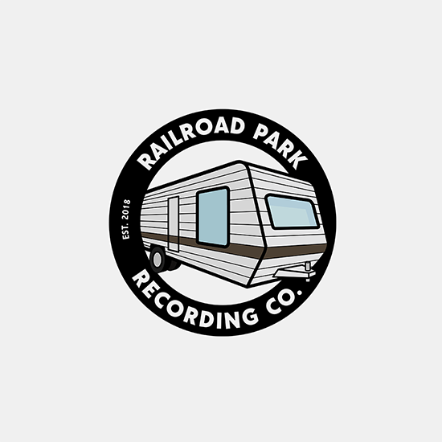

Railroad Park Recording Company is a mobile recording and music production studio based in Westport Massachusetts, USA. I was approached by the hugely talented founder, Kyle Therrien, who briefed me on creating a new look for the company through the logo design. "Tiny Studio, Big Sound"
Final Design
Logo
I broke the trailer down into the basic components that are required to recognise it as a trailer and drew them up. It was important to capture the colours of the trailer in a simplsitic complementary palette. A thick circular black border frames the trailer and gives the text a place to live.
Variation
An alternative logo was designed to aid visibility on different background shades and compositions.
Preliminary Work
Source Material
Externally the trailer is aesthetically dated, however internally is modern, fresh and filled with the latest studio tech. This all adds charm and character and in return gave me an ideal starting point for my design.
Sketchbook

The trailer plays such a significant part of what makes this company unique. Therefore it was really important that I didn't just draw a trailer, but I drew the trailer.
Client Response